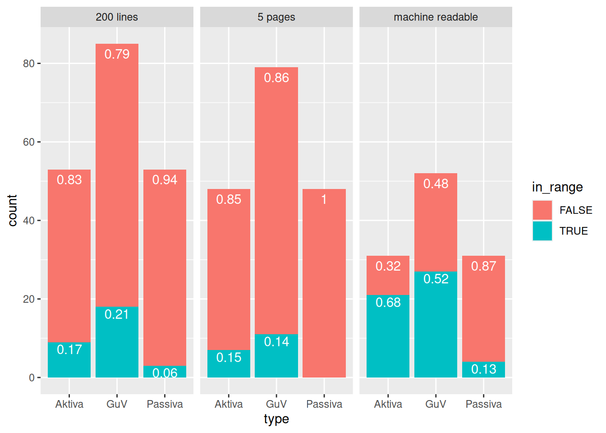
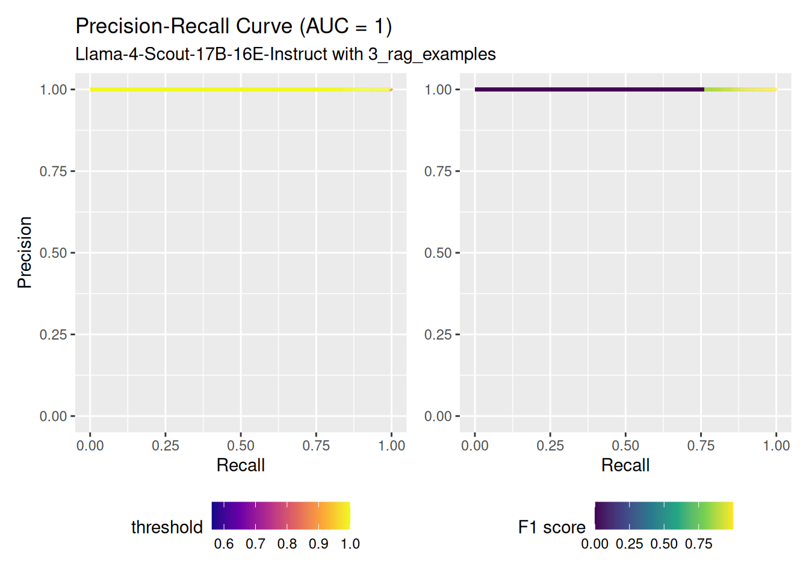
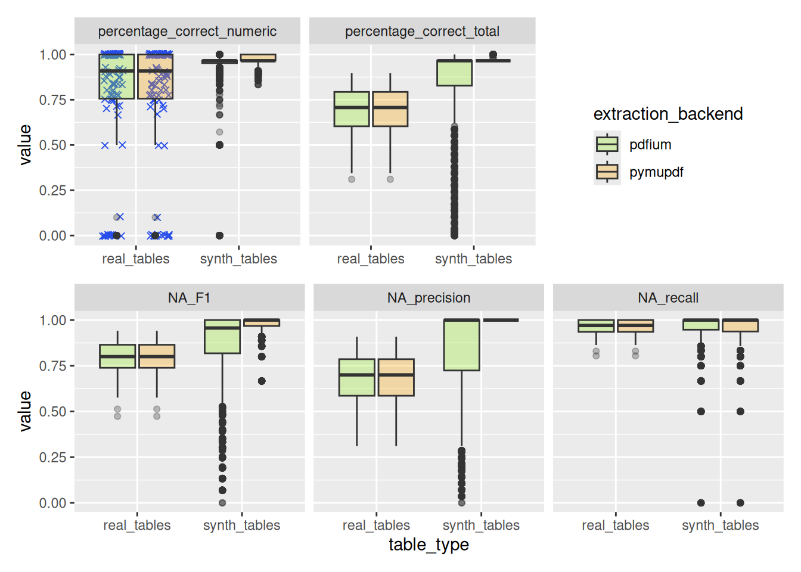

5 Results
5.1 Page identification
As described in 8.2.1 open source libraries have been used to extract the text from the annual reports.
5.1.1 Baseline: Regex
Building a sound regular expression often is an iterative process. In a first approach a very simple one was implemented.
Comparing the differences in the metrics based on the different text extraction libraries it can be said that the extracted text is very similar but not identical. Since the resukts are not depending on the used text extraction library the exhaustive regex restricted has only been run with the fast text extraction library pdfium. The results of the regex based page identification are presented in the following tables.
- look into details where they differ and if it is because of a line break or whitespace ?
Due to the imbalanced distribution of the classes the accuracy is not a good metric to compare the performance of the different methods. The number of pages of interest is much smaller than the number of irrelevant pages. Therefore, precision, recall and F1 score are presented as well.
The regular expressions can be found in the appendix (see 5.1.1).
General bad precision. Increasing recall degrades precision even further. number of pages positive identified total; used as subset for table identification task

Results by company?
## Warning: Removed 24 rows containing non-finite outside the scale range
## (`stat_boxplot()`).## Warning: Removed 24 rows containing missing values or values outside the
## scale range (`geom_point()`).
5.1.2 Table of Contents understanding
## Joining with `by = join_by(filepath)`
## `summarise()` has grouped output by 'type', 'benchmark_type'. You
## can override using the `.groups` argument.An optional step for larger documents in Li et al. (2023) framework is to identify the pages of interest based on the table of contents (TOC). This would be more efficent than processing the whole document with an LLM. The TOC in a PDF can be given explicit and machine readable or it can be presented in form of text on any page. Of course it can be missing completely as well.
For a lot of short annual reports one can find the tables of interest within the first eight pages as well.
calculate and add Qwen, Gemini or LLama results? <– No time!
5.1.2.1 Text based
Li et al. (2023) used the table of contents to identify the pages of interest. In their approach the table of contents is extracted from the text. Based on their observation, that the TOC that “ACFRs typically spans no more than the initial 165 lines of the converted document” (p. 20), they use the first 200 lines of text.
My expectation was to find the TOC within the first five pages. Often we find way less than 200 lines of text on the five first pages (see Figure 5.1). Some files are not machine readable without OCR and thus show zero lines in the first five pages as well.

Figure 5.1: Histogram of the number of lines in the first 5 pages of the annual reports
5.1.2.1.1 First five pages
A request to Mistral results in 63 strings that should represent a table of contents among the first five pages [strings not checked in detail].
5.1.2.1.2 First 200 lines
A request to Mistral results in 68 strings that should represent a table of contents among the first five pages [strings not checked in detail].
5.1.2.1.3 Machine readable TOC based
To limit the text and hopefully increase the quality of the input data one can work with the TOC representation embedded within the PDF files. From 80 annual reports 43 files do have a machine readable separate table of contents and 37 do not have one.
One can see that correct predictions for the page range are more probable when the TOC has a medium number of entries. It is possible to drop PDFs with less than 9 without loosing a single correct prediction. This means that for PDFs with TOC with less then 9 entieres the LLM was not able to make a correct prediction. This is not surprising since neither Bilanz nor Gewinn- und Verlustrechnung are mentioned there.
Almost no influence if TOC is passed formated as markdown or json. With the json formated TOC it found two more correct page ranges (single test run). It was testes because the relation page_number heading and value might have been clearer in json for a linear working LLM.

5.1.2.2 Comparison of the different approaches
- toc analysis
- cleaned measures
The LLM performed best on the machine readable TOC. It resulted in highest ratio of correct page ranges as well as in highest absolute numbers even though there were least available TOC.
Figure 5.2: Comparing number of fount TOC and amount of correct and incorrect predicted page ranges
Values can be higher than 80, the total number of PDF files, since there can be multiple tables of interested for the same type in a single document or a table of interest can span two pages. Since the prompt for the LLM was not elaborated enough to cover cases, where there are multiple tables of interest for a single type that are not placed on concurrent pages, one could argue to drop those files from the analysis. This does not change the results significantly, since there are only few files with more than one table of interest per type.

Besides a single group that was predicted far off for the machine readable TOC approach the LLM reported higher confidence for the correct page ranges and got the ranges less far off. But it did not predict the smallest ranges.
Code
## Warning: Removed 78 rows containing non-finite outside the scale range
## (`stat_smooth()`).## Warning: Removed 78 rows containing missing values or values outside the
## scale range (`geom_point()`).
In general the LLM performed worst to identify the correct page range for Passiva. The median distance is one page bigger than for Aktiva and Gewinn- und Verlustrechnung. This makes sense for Aktiva because the Passiva is often on the next page but the predicted page range for Aktiva and Passiva are often identical. Furthermore the predicted page range for Aktiva is often only a single page wide. Thus the Passiva on the next page is not inside the predicted page range.
This problem was solved by explicitly mentioning that assets and liabilities are both part of the balance sheets for the five pages and 200 lines approach but not for the machine readable TOC one.

Figure 5.3: Comparing number of fount TOC and amount of correct and incorrect predicted page ranges
A pragmatic way would be to use the machine readable TOC approachs prediction for the Aktiva page range and add one to the end page to get the Passiva page range. Beside the problem to predict a correct page range for Passiva the machine readable TOC approach was very effective and is also pretty efficient if one counts in the effort the LLM driven TOC extraction takes.
5.1.3 Classification with LLMs
structured outputs forcing to answer with a yes or no for binary task or with Aktiva, Passiva, GuV or other for multi classification task
top n accuracy
5.1.3.1 Binary classification
Could be more efficient to predict “is any of interest” and then which type, because dataset is highly imbalanced.
24 models from 6 haven been benchmarked among 5 methods
Most models have been used up to 3 examples for the context.
The best combination of model and method for each method family is presented in the following table. It is clear that the Google Gemma models are performing worst.1 Surprisingly Mistral 2410 is the best performing model for all three prediction tasks even though it only has 8B parameters.
## `mutate_all()` ignored the following grouping variables:
## • Columns `model_family`, `classification_type`
## ℹ Use `mutate_at(df, vars(-group_cols()), myoperation)` to silence
## the message.It is interesting that the predictions do not get better by providing more and more examples. Especially for the n-rag-example approach we find a significant drop in the F1 score if the examples pages come from different companies annual reports. This is caused by a sever recall drop. But also for the n-ranom-example approach we see this for the prediction of class Passiva.
Recall better with examples from same company. Precision better without.
We can also see that the prediction performance is stable.2

- f1
- multiple models
- best model detail (different methods / settings)
The experiments for the best performing model, Ministral-8B-Instruct-2410, have been extended by methods with even more examples. Especially for the top-n-rag-example approach to get a better comparable picture based on the real number of examples / context length.
## Rows: 26 Columns: 6
## ── Column specification ─────────────────────────────────────────────
## Delimiter: ","
## chr (2): approach, classification
## dbl (4): n_example, target, other, sum
##
## ℹ Use `spec()` to retrieve the full column specification for this data.
## ℹ Specify the column types or set `show_col_types = FALSE` to quiet this message.| approach | classification | n_example | target | other | sum |
|---|---|---|---|---|---|
| n_random_examples | binary | 1 | 1 | 1 | 4 |
| n_random_examples | binary | 3 | 3 | 1 | 6 |
| n_random_examples | binary | 5 | 5 | 2 | 11 |
| n_random_examples | multi | 1 | 1 | 1 | 4 |
| n_random_examples | multi | 3 | 3 | 3 | 12 |
| n_random_examples | multi | 5 | 5 | 5 | 20 |
| n_rag_examples | binary | 1 | 1 | 1 | 4 |
| n_rag_examples | binary | 3 | 3 | 1 | 6 |
| n_rag_examples | binary | 5 | 5 | 2 | 11 |
| n_rag_examples | multi | 1 | 1 | 1 | 4 |
| n_rag_examples | multi | 3 | 3 | 3 | 12 |
| n_rag_examples | multi | 5 | 5 | 5 | 20 |
| top_n_rag_examples | binary | 1 | NA | NA | 1 |
| top_n_rag_examples | binary | 3 | NA | NA | 3 |
| top_n_rag_examples | binary | 5 | NA | NA | 5 |
| top_n_rag_examples | binary | 7 | NA | NA | 7 |
| top_n_rag_examples | binary | 9 | NA | NA | 9 |
| top_n_rag_examples | binary | 11 | NA | NA | 11 |
| top_n_rag_examples | binary | 13 | NA | NA | 13 |
| top_n_rag_examples | multi | 1 | NA | NA | 1 |
| top_n_rag_examples | multi | 3 | NA | NA | 3 |
| top_n_rag_examples | multi | 5 | NA | NA | 5 |
| top_n_rag_examples | multi | 7 | NA | NA | 7 |
| top_n_rag_examples | multi | 9 | NA | NA | 9 |
| top_n_rag_examples | multi | 11 | NA | NA | 11 |
| top_n_rag_examples | multi | 13 | NA | NA | 13 |
Predictions very accurate. Confidence not always 1. Wrong predictions with often with medium confidence. If Aktiva and Passiva on same page more often Aktiva predicted. Confidence for no displayed as 1-confidence to represent confidence for yes (binary classification).

Qwen returns always high confidence even if it is wrong.

- IBB other law
- degewo only one where no ocr is needed
mistral: recall IBB and Netzholding big range meta & mistral: very high precision for Amt für Statistik BBB <- lowest average pagecount (29.3) but IBB has more pages than berlinovo but better precision. No information about which company / report the page is from
## Rows: 252 Columns: 3
## ── Column specification ─────────────────────────────────────────────
## Delimiter: ","
## chr (2): filepath, type
## dbl (1): page
##
## ℹ Use `spec()` to retrieve the full column specification for this data.
## ℹ Specify the column types or set `show_col_types = FALSE` to quiet this message.## Warning: Removed 246547 rows containing non-finite outside the scale range
## (`stat_boxplot()`).
Code
n_reports_by_company_no_ocr <- df_temp %>% select(company, filepath) %>% unique() %>% group_by(company) %>% reframe(n = n())
n_reports_by_company <- df_filtered %>% unnest(predictions) %>% select(company, filepath) %>% unique() %>% group_by(company) %>% reframe(n = n())
n_reports_by_company_no_ocr %>% kbl()| company | n |
|---|---|
| Amt für Statistik Berlin-Brandenburg | 10 |
| Berlin Energie und Netzholding | 3 |
| Berliner Bäder Betriebe | 10 |
| Berlinovo | 15 |
| GESOBAU AG | 13 |
| IBB | 22 |
| degewo AG | 1 |
| company | n |
|---|---|
| Amt für Statistik Berlin-Brandenburg | 10 |
| Berlin Energie und Netzholding | 3 |
| Berliner Bäder Betriebe | 10 |
| Berlinovo | 15 |
| GESOBAU AG | 13 |
| IBB | 22 |
| degewo AG | 7 |
- Performance makes a jump at a critical parameter number (3B) then slow increase (compare Qwen 2.5)
- Changes unsystematic with new models (see Mistral, Qwen 3 old vs llama 4)
PR curves for all classes look very alike- showing micro average curve
## Loading required package: rlang##
## Attaching package: 'rlang'## The following objects are masked from 'package:purrr':
##
## %@%, flatten, flatten_chr, flatten_dbl, flatten_int, flatten_lgl,
## flatten_raw, invoke, splice## The following objects are masked from 'package:jsonlite':
##
## flatten, unbox## Warning: Using one column matrices in `filter()` was deprecated in dplyr
## 1.1.0.
## ℹ Please use one dimensional logical vectors instead.
## This warning is displayed once every 8 hours.
## Call `lifecycle::last_lifecycle_warnings()` to see where this
## warning was generated.## Warning: Using `size` aesthetic for lines was deprecated in ggplot2 3.4.0.
## ℹ Please use `linewidth` instead.
## This warning is displayed once every 8 hours.
## Call `lifecycle::last_lifecycle_warnings()` to see where this
## warning was generated.

5.1.3.2 Multi classification
bigger models are better with the multi classification task Llama-4-Scout almost perfect F1 for all classes
Llama-4-Scout runs fast but needs long to load because it has 109B in total with 17B actives Gemma performs much better than with binary classification
drop with Qwen-14B
## `mutate_all()` ignored the following grouping variables:
## • Columns `model_family`, `metric_type`
## ℹ Use `mutate_at(df, vars(-group_cols()), myoperation)` to silence
## the message.Mistral-8B-2410 almost as good as Mistral-123B-2411 but much faster
## `mutate_all()` ignored the following grouping variables:
## • Columns `model_family`, `metric_type`
## ℹ Use `mutate_at(df, vars(-group_cols()), myoperation)` to silence
## the message.Mistral-2410 reaches good performance already with few examples and can work with law-context approach but more examples don’t realy help any further
## Warning: Removed 6 rows containing missing values or values outside the scale
## range (`geom_text()`).Most of the time pretty confident most problems with class “other” If Aktiva and Passiva on same page it predicts Aktiva. Also one Passiva missclassified as Aktiva No flipped confidence 3

Microsoft phi 4 and Falcon 3 only ran with one and two examples because their context window is smaller.
- f1
- multiple models
- best model detail (different methods / settings)


5.1.4 Term frequency based classifier
RandomForest performs much better than a logistic regression Better results with * undersampling * training on all types simultaniousely
5.1.4.1 Two predictors
Term frequency of nouns of the law about Aktiva Float freqency (floats divided by word count)
5.1.4.2 Four predictors
Count of integers Count of dates
- top 1
- top k
low precision llm linked to position of correct page? numeric frequency?
Code
import pandas as pd
import numpy as np
from sklearn.ensemble import RandomForestClassifier
from sklearn.metrics import accuracy_score
from sklearn.model_selection import train_test_split
df_train_us = pd.read_csv("../benchmark_results/page_identification/term_frequency_table.csv")
# Drop rows without ground truth
# df_train_us = df_word_counts.merge(df_truth, on=["filepath", "type"], how="left")
df_train_us["is_truth"] = (df_train_us["page"] == df_train_us["page_truth"]).astype(int)
df_train_us = df_train_us.dropna(subset=["page_truth"])
# Undersample the majority class (is_truth == 0)
df_true = df_train_us[df_train_us["is_truth"] == 1]
df_false = df_train_us[df_train_us["is_truth"] == 0]
df_false_undersampled = df_false.sample(n=len(df_true), random_state=42)
df_train_us_balanced = pd.concat([df_true, df_false_undersampled]).sample(frac=1, random_state=42).reset_index(drop=True)
# df_train_us_balanced
# Features and target
X = df_train_us_balanced[["term_frequency", "float_frequency"]].values
y = df_train_us_balanced["is_truth"].values
# Train-test split (70% train, 30% test)
X_train, X_test, y_train, y_test, df_train_split, df_test_split = train_test_split(
X, y, df_train_us_balanced, test_size=0.3, random_state=42, stratify=y
)
# Train Random Forest model
clf = RandomForestClassifier(n_estimators=100, random_state=42)
clf.fit(X_train, y_train)
score = clf.score(X_train, y_train)
# print(f"Training accuracy: {score:.2%}")
score = clf.score(X_test, y_test)
# print(f"Test accuracy: {score:.2%}")
# Predict and rerank: get predicted probabilities for each page
df_train_split["score"] = clf.predict_proba(X_train)[:, 1]
df_test_split["score"] = clf.predict_proba(X_test)[:, 1]
# Add all not-chosen negatives from df_false to test split
df_false_unused = df_false.loc[~df_false.index.isin(df_false_undersampled.index)]
df_false_unused = df_false_unused.copy()
df_false_unused["score"] = clf.predict_proba(df_false_unused[["term_frequency", "float_frequency"]].values)[:, 1]
df_false_unused["rank"] = np.nan # Not ranked yet
# Concatenate with test split
df_test_split = pd.concat([df_test_split, df_false_unused], ignore_index=True)
# For each group (filepath, type), sort by score descending
df_train_split["rank"] = df_train_split.groupby(["filepath", "type"])["score"].rank(ascending=False, method="first")
df_test_split["rank"] = df_test_split.groupby(["filepath", "type"])["score"].rank(ascending=False, method="first")
Code
import pandas as pd
import numpy as np
from sklearn.ensemble import RandomForestClassifier
from sklearn.metrics import accuracy_score
from sklearn.model_selection import train_test_split
df_train_us = pd.read_csv("../benchmark_results/page_identification/term_frequency_table.csv")
# Drop rows without ground truth
# df_train_us = df_word_counts.merge(df_truth, on=["filepath", "type"], how="left")
df_train_us["is_truth"] = (df_train_us["page"] == df_train_us["page_truth"]).astype(int)
df_train_us = df_train_us.dropna(subset=["page_truth"])
# Undersample the majority class (is_truth == 0)
df_true = df_train_us[df_train_us["is_truth"] == 1]
df_false = df_train_us[df_train_us["is_truth"] == 0]
df_false_undersampled = df_false.sample(n=len(df_true), random_state=42)
df_train_us_balanced = pd.concat([df_true, df_false_undersampled]).sample(frac=1, random_state=42).reset_index(drop=True)
# df_train_us_balanced
predictors = [
"term_frequency",
"float_frequency",
"date_count",
"integer_count"
]
# Features and target
X = df_train_us_balanced[predictors].values # only better with date and integer counts; otherwise worse
y = df_train_us_balanced["is_truth"].values
# Train-test split (70% train, 30% test)
X_train, X_test, y_train, y_test, df_train_split, df_test_split = train_test_split(
X, y, df_train_us_balanced, test_size=0.3, random_state=42, stratify=y
)
# Train Random Forest model
clf = RandomForestClassifier(n_estimators=100, random_state=42)
dummy = clf.fit(X_train, y_train)
# Predict and rerank: get predicted probabilities for each page
df_train_split["score"] = clf.predict_proba(X_train)[:, 1]
df_test_split["score"] = clf.predict_proba(X_test)[:, 1]
# Add all not-chosen negatives from df_false to test split
df_false_unused = df_false.loc[~df_false.index.isin(df_false_undersampled.index)]
df_false_unused = df_false_unused.copy()
df_false_unused["score"] = clf.predict_proba(df_false_unused[predictors].values)[:, 1]
df_false_unused["rank"] = np.nan # Not ranked yet
# Concatenate with test split
df_test_split = pd.concat([df_test_split, df_false_unused], ignore_index=True)
# For each group (filepath, type), sort by score descending
df_train_split["rank"] = df_train_split.groupby(["filepath", "type"])["score"].rank(ascending=False, method="first")
df_test_split["rank"] = df_test_split.groupby(["filepath", "type"])["score"].rank(ascending=False, method="first")

5.2 Table extraction
5.2.1 Baseline: Regex
## Rows: 12324 Columns: 23
## ── Column specification ─────────────────────────────────────────────
## Delimiter: ","
## chr (2): filepath, model
## dbl (17): NA_true_positive, NA_false_positive, NA_false_negative, NA_true_ne...
## lgl (4): json_error, grammar_error, predictions, T_EUR
##
## ℹ Use `spec()` to retrieve the full column specification for this data.
## ℹ Specify the column types or set `show_col_types = FALSE` to quiet this message.Regex approach not even perfect with synthetic tables. Mistakes in the text parsed with pdfium.
## Warning: Removed 322 rows containing non-finite outside the scale range
## (`stat_boxplot()`).## Warning: Removed 5 rows containing missing values or values outside the scale
## range (`geom_point()`).
## Warning: Removed 18452 rows containing non-finite outside the scale range
## (`stat_boxplot()`).
References
This is not due to a temporary technical problems caused by a bug in the transformers version shipped with the vllm 0-9-2 image. Those problems have been overcome. The performance stays bad.↩︎
Earlier experiments on a subset of the pages have been run five times indicating stable results. Running the experiments up to tree times in this very task indicate this as well.↩︎
classify framework in needs special models with pooling capability. Would have been interesting but time was limited and would have needed new special models in most cases↩︎